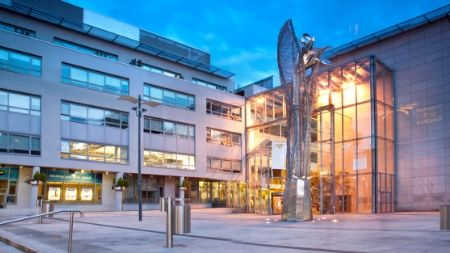

NATIONAL COLLEGE OF IRELAND

- The programme aims to fulfil the ICT sector-specific needs as reported in Ireland's National Skills Strategy 2025.
- By combining technical skills with innovation principles, it effectively delivers core technology skills in Cloud Software Development, Fog/Edge Computing, DevSecOps, Cloud Architecture and Cloud Platform Programming.
- I gained experience with the latest ethical design principles, models, and technologies via state-of-the-art Cloud Competency Centre. The course was delivered by faculty and industry practitioners with proven expertise in Cloud Computing.
- I gained valuable insights into utilizing various cloud technologies and deepened my understanding of their underlying mechanisms through hands-on experience while working on my assignments.